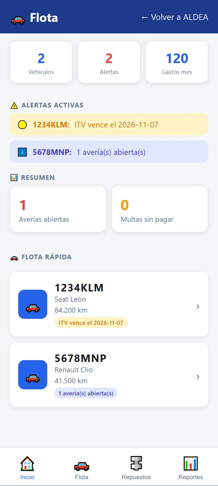
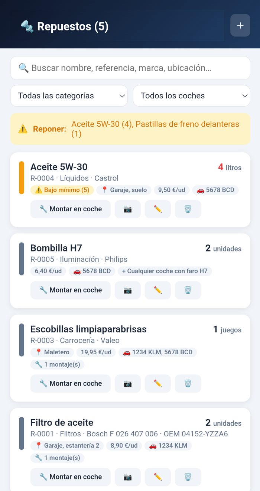
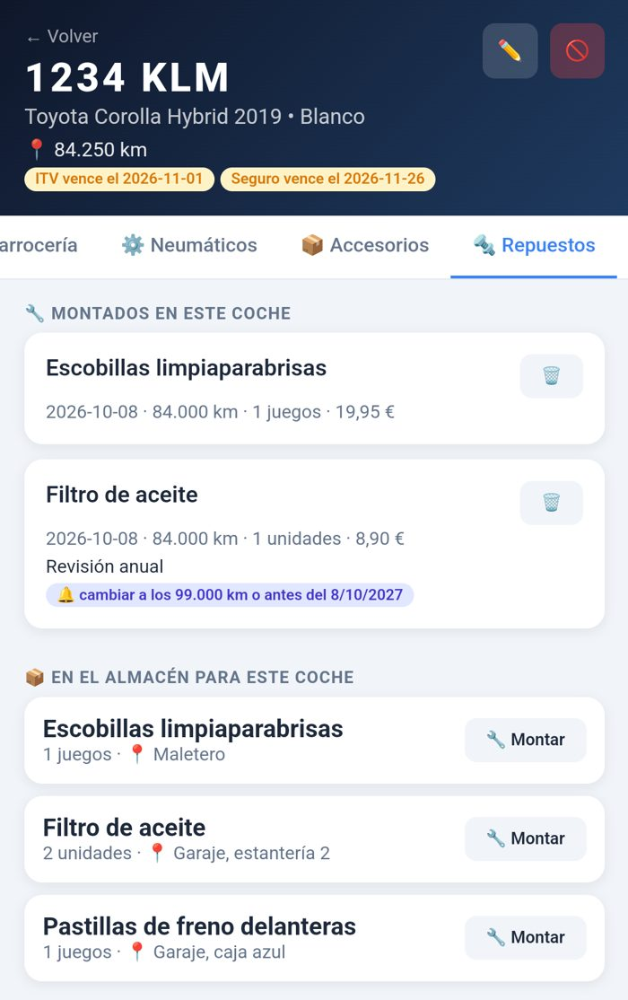

Manual › 📱 Manual de las aplicaciones
5.1 🚗 Flota
- Abajo tienes Inicio (resumen y alertas), Flota (tus vehículos), Repuestos (tu almacén de piezas) y Reportes (gastos, ITV, neumáticos, averías…).
- Dentro de cada vehículo registras kilómetros, ITV, seguro, aceite, neumáticos, averías, taller, multas y accesorios. Las alertas (ITV o seguro a punto de vencer, cambio de aceite…) aparecen en Inicio.
- 📁 Documentos: permiso de circulación, seguro, facturas… en PDF, foto, Word o Excel (máximo 25 MB por archivo).
- Repuestos: cada pieza con referencia, cantidad, mínimo y ubicación. Avisa cuando hay que reponer; al montarla en un coche se descuenta del almacén y su coste se suma a los gastos del coche. Si indicas «Cambiar cada … km / … meses», te avisa cuando toque.
- Informes listos para imprimir o guardar en PDF.


